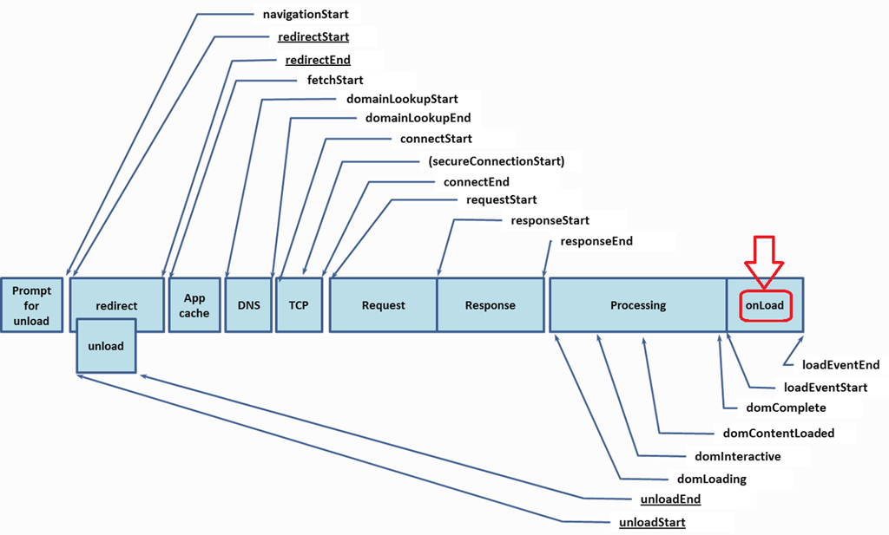

Introduction
If you are a front-end developer, like me : ) , it is really important to understand the client life cycle (in terms of JavaScript Browser-engine, DOM, etc…).
In fact, there are some cases in which we need to include our custom JavaScript functions and we CAN “decide” in what moment on this life cycle we want to add our code.
Events
First of all is good to know what happens internally when we, as a users, request a web page to a web server. Behind the curtains there is a lot of events like App Cache, DNS, TCP, Request, Response, Processing and OnLoad. All of the are executed by the browsers, see the below image:

Source: http://www.w3.org/TR/navigation-timing/#processing-model
OnLoad
As I remarked in the picture, in this post we are talking about the onLoad subprocess. In fact, when working with SharePoint 2013, there is a lot of events taking place in this subprocess. This is because SharePoint is becoming more JavaScript-oriented.
For example, there are a lot of OOTB SharePoint JavaScript files: see this post series: http://www.spcaf.com/blog/sharepoint-javascript-context-dev-part-1/.
The main goal of this post, apart of refresh the basics of browser engines and processes, is to do a investigation (research task) about the different techniques used to provided our custom JavaScript code loaded before / in the middle / after OnLoad events in SharePoint.
We will see 8 different techniques evaluating pros and cons and finally we will do a test experiment with all of them.
Sys.Application.pageLoad
Sys.Application class belongs to ASP.NET AJAX library.aspx), that is built into ASP.NET 3.5 and is automatically made available behind all pages in a SharePoint Farm. The events are related to the Sys.Application class, which provides a runtime object to take care of client events and to manage client components. This object provides access to all its members without creating an instance for it.
Events related
pageInitpageLoadpageUnload
Note that this class can be used because we have in our masterpage the asp:ScriptManager class:
<asp:ScriptManager ID="ScriptManager" runat="server" EnablePageMethods="false" EnablePartialRendering="true" EnableScriptGlobalization="false" EnableScriptLocalization="true" />
You can simply call the Sys.Application.add_load method from <head> or <body> to register a function that will execute right after the HTML elements on the page have been made accessible through the DOM.
Usage:
1 | Sys.Application.add_load(MyLoad); |
Source: http://www.codeproject.com/Articles/26033/The-Page-Life-Cycle-of-Client-Browser
Sys.WebForms.PageRequestManager.pageLoaded
This class is responsible for partial post back. This object will be initiated on its own, to get this object in client side, the page should have a ScriptManager and minimum one UpdatePanel. This object also has certain events which will be involved in the client page life cycle. The full name of the class along with the namespace is Sys.WebForms.PageRequestManager.
Events related:
initializeRequestbeginRequestpageLoadingpageLoadedendRequest
The pageLoaded event is raised after all content on the page is refreshed, whether it was refreshed because of a synchronous (full-page) postback or an asynchronous postback. You can use this event to provide a custom transition effect for updated content.
Usage
1 | Sys.WebForms.PageRequestManager.getInstance().add_pageLoaded(MyPageLoaded); |
Source: https://msdn.microsoft.com/en-us/library/bb397523(v=vs.100).aspx.aspx) and http://www.codeproject.com/Articles/26033/The-Page-Life-Cycle-of-Client-Browser
jQuery(document).ready
This technique relies on The jQuery Library and it is the technique that most Web designers and developers prefer but in my opinion we should evaluate carefully its usage. It will depends on the other needs we have because this technique depends upon a library that is not automatically integrated into the pages in a SharePoint site.
NOTE: You need to have jQuery library to use this technique.
1 | <script src="//ajax.aspnetcdn.com/ajax/jQuery/jquery-1.9.1.min.js" type="text/javascript"></script> |
_spBodyOnLoadFunctionNames and _spBodyOnLoadFunctions
Pages in a SharePoint environment load in a set of JavaScript files for a JavaScript library which goes by the name of the SharePoint JavaScript Class Library (JSOM). This library contains more than 160 js files (http://www.spcaf.com/blog/sharepoint-javascript-context-dev-part-1/).
One of them is named init.js which contains a global variables named _spBodyOnLoadFunctionNames and _spBodyOnLoadFunctions.
In fact, if we go further and see init.js file, we can found the function named ProcessDefaultOnLoad():
1 | function ProcessDefaultOnLoad() { |
And that is really useful, because we can understand the order in which these functions are executed, first _spBodyOnLoadFunctionNames and later _spBodyOnLoadFunctions.
Usage
1 | _spBodyOnLoadFunctionNames.push('OnPageLoad'); |
Source: http://www.cyberbrutus.com/cyberbrutus/javascript-execution-after-page-load-in-sharepoint/
ExecuteOrDelayUntilScriptLoaded
ExecuteOrDelayUntilScriptLoaded run after internal SharePoint scripts are loaded. This function allows to wait until one of SharePoint js files is loaded.
1 | ExecuteOrDelayUntilScriptLoaded(MyFunction, "sp.core.js"); |
More information: http://yakovenkomax.com/sharepoint-2013-page-load-events/
SP.SOD.executeFunc
Make sure the SharePoint script file SP.js is loaded before your code is executed.
Usage
1 | function sharePointReady(){ |
ExecuteOrDelayUntilBodyLoaded
ExecuteOrDelayUntilBodyLoaded runs before internal SharePoint scripts are loaded. It runs at early stage in the OnLoad subprocess.
Usage
1 | ExecuteOrDelayUntilBodyLoaded(delayBody); |
Download
You can download the full JS file with all techniques implemented here
Experiment and Results
In order to figure out which technique is better for each scenario, we can add all of them into a SharePoint Page and let’s see the execution order.
I did two tests, one in a SharePoint On Prem environment using a Empty Team Site and other in a SharePoint Online environment using custom template based on publishing template.
On Prem + IE10 (Load time in ms)
| Empty SharePoint 2013 - OnPremise + IE10 | Run 1 | Run 2 | Run 3 (Clean Cache) |
|---|---|---|---|
| ExecuteOrDelayUntilBodyLoaded | 148 | 147 | 122 |
| Sys.Application.pageLoad | 148 | 148 | 123 |
| document.ready Jquery | 154 | 152 | 126 |
| _spBodyOnLoadFunctionNames | 519 | 452 | 247 |
| _spBodyOnLoadFunction | 531 | 463 | 261 |
| ExecuteOrDelayUntilScriptLoaded: sp.core.js | 539 | 471 | 310 |
| SP.SOD.executeFunc: sp.js | 574 | 580 | 357 |
| Sys.WebForms.PageRequestManager.PageLoaded | 840 | 736 | 791 |
On Prem + Chrome 43.0 (Load time in ms)
| Empty SharePoint 2013 - OnPremise + Chrome 43.0 | Run 1 | Run 2 | Run 3 (Clean Cache) |
|---|---|---|---|
| ExecuteOrDelayUntilBodyLoaded | 199 | 239 | 156 |
| Sys.Application.pageLoad | 210 | 251 | 165 |
| document.ready Jquery | 217 | 263 | 174 |
| SP.SOD.executeFunc: sp.js | 506 | 628 | 359 |
| _spBodyOnLoadFunctionNames | 540 | 480 | 547 |
| _spBodyOnLoadFunction | 557 | 495 | 559 |
| ExecuteOrDelayUntilScriptLoaded: sp.core.js | 726 | 647 | 617 |
| Sys.WebForms.PageRequestManager.PageLoaded | 1280 | 1291 | 1050 |
Publishing Custom - SP Online + Chrome 43.0 (Load time in ms)
| Publishing Custom - SP Online + Chrome 43.0 | Run 1 | Run 2 |
|---|---|---|
| ExecuteOrDelayUntilBodyLoaded | 84 | 81 |
| Sys.Application.pageLoad | 125 | 121 |
| document.ready Jquery | 140 | 135 |
| _spBodyOnLoadFunctionNames | 272 | 434 |
| _spBodyOnLoadFunction | 278 | 438 |
| ExecuteOrDelayUntilScriptLoaded:sp.core.js | 501 | 652 |
| SP.SOD.executeFunc: sp.js | 584 | 628 |
| Other loadings, AJAX, Yammer integration | ||
| Sys.WebForms.PageRequestManager.PageLoaded | 1102 | 3777 |
Publishing Custom - SP Online + IE11 (Load time in ms)
| Publishing Custom - SP Online + IE11 | Run 1 | Run 2 |
|---|---|---|
| ExecuteOrDelayUntilBodyLoaded | 142 | 159 |
| Sys.Application.pageLoad | 190 | 195 |
| document.ready Jquery | 225 | 217 |
| _spBodyOnLoadFunctionNames | 300 | 273 |
| _spBodyOnLoadFunction | 303 | 276 |
| ExecuteOrDelayUntilScriptLoaded:sp.core.js | 404 | 436 |
| SP.SOD.executeFunc: sp.js | 513 | 423 |
| Other loadings, AJAX, Yammer integration, | ||
| Sys.WebForms.PageRequestManager.PageLoaded | 1950 | 3971 |
Note that the times are collected using Navigation Timing provided by JavaScript: http://www.w3.org/TR/navigation-timing/#introduction.
Conclusions
ExecuteOrDelayUntilBodyLoadedfunction is always executed the first (but at this stage we can not access to SP methods). This could be useful to execute our custom code at really earlier stage in theOnLoadprocess.- There are two SharePoint onLoad functions
_spBodyOnLoadFunctionNamesand_spBodyOnLoadFunction. Always executed in the order. So, if we want to execute some code after all functions included by us (or other devs) in_spBodyOnLoadFunctionNames, then is useful to use this one_spBodyOnLoadFunction, because is executed the last. ExecuteOrDelayUntilScriptLoaded: sp.core.jsandSP.SOD.executeFunc: sp.js. are swapping the order of execution in a random way.- If we want to execute some functions after all functions (SP, after load functions, Yammer, etc.) we can use this function to attach the OnLoad event
Sys.WebForms.PageRequestManager.PageLoaded.
Note that these results are tested in my current scenario and probably isn’t the same that your scenario, but please feel free to add some conclusions, point of views, different scenarios, etc.